{kind=link}
{kind=link}
{kind=link}
{kind=link}
Длительность: 18 дней
Стоимость: от 3890 евро
Человек в группе: 70
Что включено:
- размещение в отелях 5* в Буэнос-Айресе (3 ночи);
- завтраки (в отелях в Буэнос-Айресе);
- 8-и часовая обзорная экскурсия по Буэнос-Айресу на автобусе;
- обзорные экскурсии в Пуэрто-Мадрин (Аргентина), Пунта-Аренас (Чили), Ушуайя (Аргентина), Стэнли (Фолклендские острова);
- посещение танго-шоу в Буэнос-Айресе;
- все трансферы по программе;
- 2-х местное размещение на корабле в каюте выбранной категории (Inside / Oceanview / Balcony / Club Balcony Suite);
- портовые сборы;
- круглосуточное питание на борту (кроме алкогольных напитков);
- развлекательные программы на борту;
- музыкальные представления на борту - шоу, живая музыка, дискотеки, театр;
- пользование бассейнами, тренажерным залом, джакузи на борту.
Дополнительно:
- авиаперелет (около 1000 евро);
- питание в Буэнос-Айресе (кроме завтраков);
- алкогольные напитки на борту;
- интернет в каждой из 4-х стран + wi-fi на борту;
- чаевые на борту;
- виза (если она предусмотрена условиями въезда для граждан вашей страны);
- страховка с полным покрытием от COVID-19, включая расходы на госпитализацию и изоляцию.
Программа путешествия
Кто мечтал об Антарктиде!? Делаем ее доступной, как никогда!
День 1
Прилёт в аргентинскую столицу - город Буэнос-Айрес. Именно тут сосредоточено большинство всех аргентинских достопримечательностей. У города есть свое лицо, шарм, дух, архитектурный, культурный и гастрономический стиль. Буэнос называют латиноамериканским Парижем, и это обо многом говорит. В аэропорту нас ожидает трансфер, на котором отправляемся в район Реколета - самый элегантный квартал Буэнос-Айреса, где заселяемся в отель 5*. Сегодня нас ожидает ужин-знакомство в знаковом ресторане Буэнос-Айреса, и конечно же, настоящее Танго-Шоу.
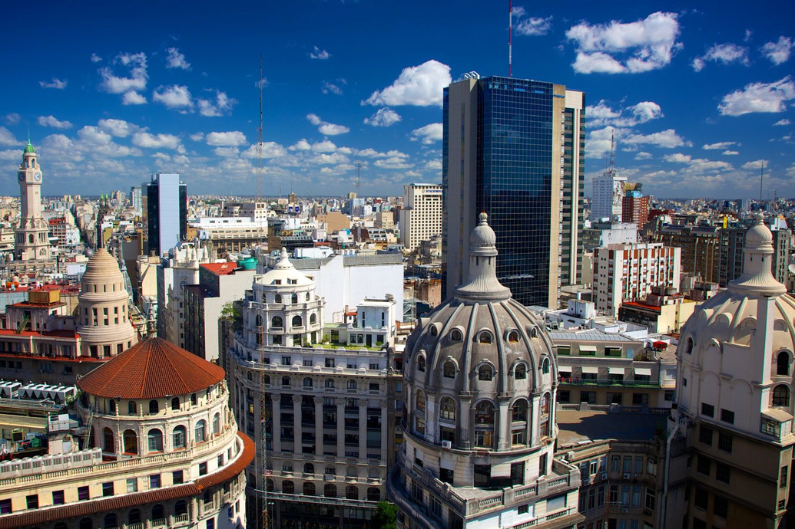{kind=link}
День 2
Утром неспешно завтракаем в отеле и выдвигаемся на обзорную экскурсию по Буэнос-Айресу с интересным локальным гидом, который покажет нам город глазами местного, но на нашем языке. Экскурсия продлится около 8-и часов, поэтому будем перемещаться по городу на автобусе и сделаем 3 больших остановки. Мы увидим исторические и значимые места города - Площадь Мая, Сан-Тельмо, пестрый район Ла Бока, Пуэрто Мадеро, Ретиро, и конечно же - кладбище Реколета. Задача на этот день: ощутить дух, вайб и вкус этого города.
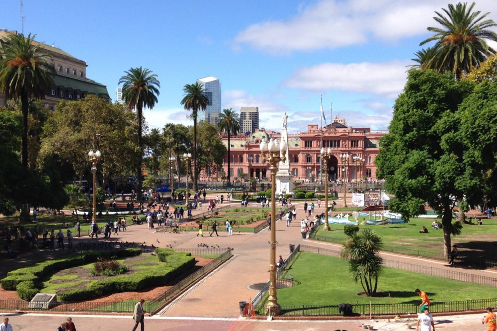{kind=link}
День 3
После завтрака, выселяемся из отеля и отправляемся в порт, где проходим процесс регистрации и посадки на корабль, который станет нашим домом на ближайшие 14 дней. Несколько слов о нашем судне: корабль построен в 2001 году, реставрирован в 2018, имеет 294 метра в длину и 38 в ширину. Это один из очень немногих сверх-комфортных кораблей, который имеет лицензию на хождение в водах Антарктиды и переход через пролив Дрейка. От носа до кормы, на борту корабля достаточно развлечений, чтобы заполнить каждый день путешествия. Здесь есть бары, рестораны и лаунжи, обширный спа-центр, казино, спортивные площадки, и разнообразные рестораны и кафе. Напомним, что трёхразовое питание уже включено в стоимость. Ориентировочно в 18.45 судно снимается с якоря, выходит из Буэнос-Айреса и отправится на юг, в направлении города Пуэрто-Мадрин. Антарктико-Южно-Американский круизно-морской этап - начался!
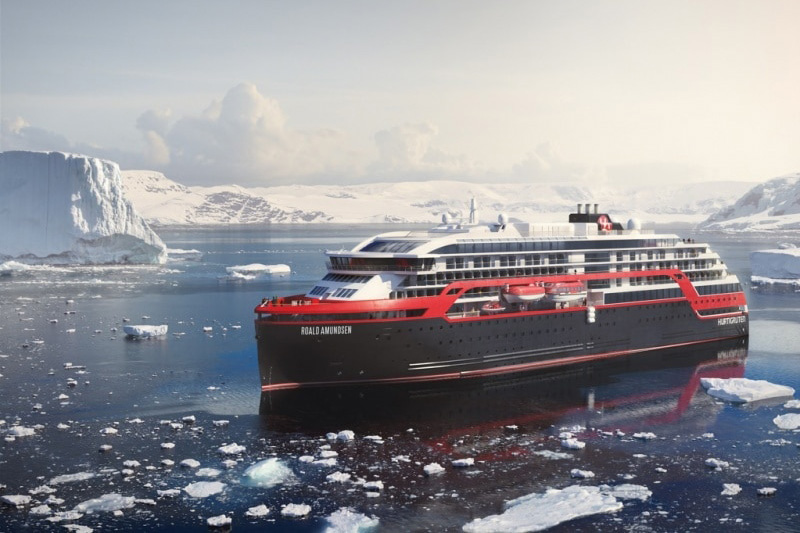{kind=link}
День 4-5
Сегодня первый день, который мы полноценно проведем в море, а также день который нам нужен, чтобы основательно изучить корабль и его возможности. После завтрака, сходим на берег в порту самого крупного аргентинского полуострова Вальдес. Первая встреча с легендарной Патагонией. Пуэрто-Мадрин - это небольшой городок, который славится своими прекрасными видами, разнообразием растительности и богатым животным миром. Здесь же, если повезет, мы впервые сможем увидеть пингвинов в дикой природе. Примечание: в городе Пуэрто-Мадрин мы проведем время с 08.00 до 17.00, температура воздуха будет от 13 до 27ºC.
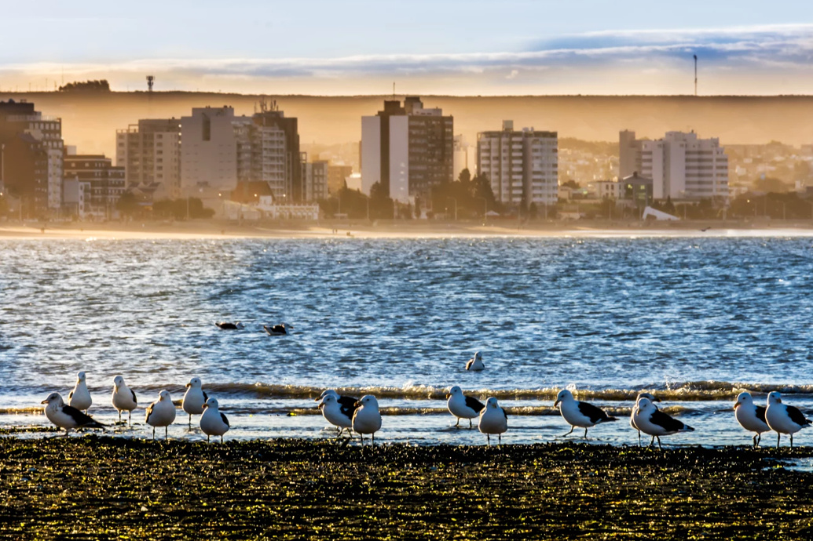{kind=link}
День 6-7
Сегодня мы, как герои романа Жюль Верна “Дети Капитана Гранта” - будем идти по океану вдоль берегов Патагонии, а затем и Огненной Земли. В эти же сутки, наш корабль совершит еще один знаковый для всех путешественников, манёвр - мы войдем в Магелланов пролив. Мы уже в Чилийской Патагонии - городе Пунта-Аренас. В Доколумбову эпоху, территорию современного Пунта-Аренаса населяли индейские племена теуэльче. Первым из европейцев, открывшим эти места был Фердинанд Магеллан, совершивший первое кругосветное путешествие вокруг земного шара. Пролив он проплыл осенью 1520 г. недалеко от Пунта-Аренаса. Теперь пролив носит его имя, а в центре города установлен памятник великому мореплавателю. Пунта Аренас - городок интересный, имеющий яркий портовый дух Патагонии. Исследуем его в течении дня.
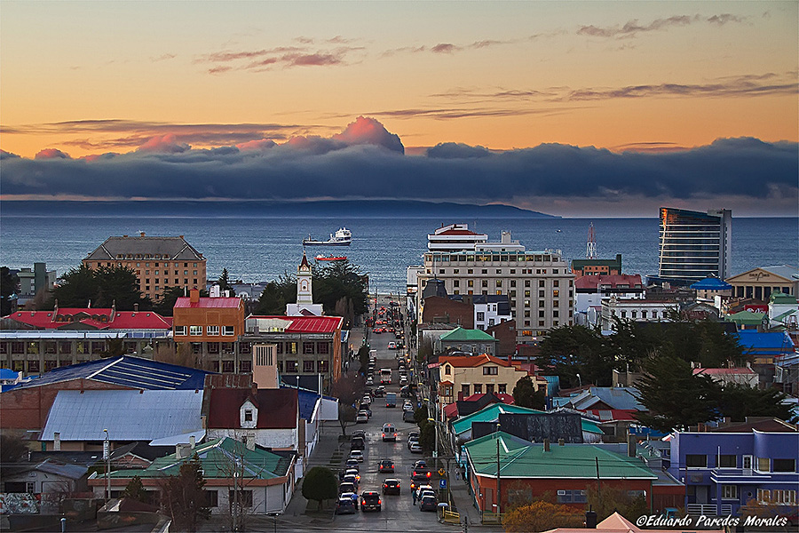{kind=link}
День 8
Прибываем в Ушуайю - самый южный город мира и часть Южной Америки, называемая краем света. Продуваемый всеми ветрами, город расположен на крутом склоне и окружен горами Мартьяль и проливом Бигля. За последние годы, Ушуайя, стала полноценным хабом в Антарктику, а также полноценным аргентинским курортом. Один из самых колоритных городов мира, безусловно. Мы организуем экскурсию в национальный парк Огненная Земля, где среди суровой красоты - будем гулять по тропам, обрамленным морем, лесами, озерами и горами.
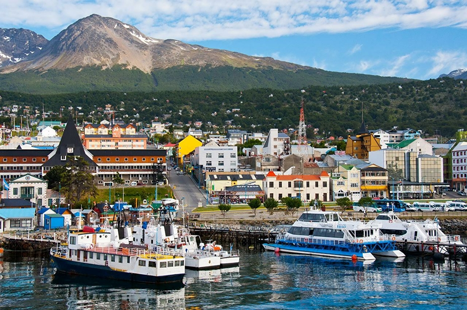{kind=link}
День 9
Сегодня проходим пролив, названный в честь легендарного пирата Фрэнсиса Дрейка, который шел в этих водах в 1578 году! Пролив Дрейка находится между Южной Америкой и Антарктидой, и обладает целым рядом характеристик, что делает его выдающимся на фоне всех остальных проливов нашей планеты. Во-первых, это самый широкий пролив на географической карте, его ширина в самой узкой части составляет 820 километров. Второе - это самый глубокий пролив на планете, и когда морские суда проходят через него, то под ними 5 километров воды. Ну и третья особенность этого сурового места — это постоянные ветра. Дрейк считается самым штормовым местом на планете, а его прохождение огромным испытанием для небольших корабликов и парусных яхт, которым нужно еще и в два раза больше времени, чтобы его преодолеть. Наш корабль в этом плане, более устойчив, комфортен, и способен проходить это штормовое место - быстрее и комфортнее, в чем его безусловный плюс. Мы приближаемся к Антарктике.
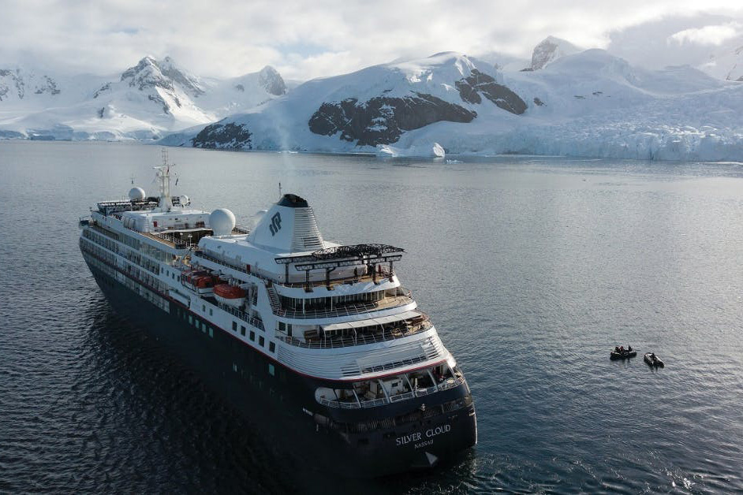{kind=link}
День 10
После бурного Дрейка, мы словно попадем в другую реальность. Само осознание, что мы забрались так далеко, на крайний юг планеты - мощный мурашечный фактор. Deception - это вообще уникальный во всех смыслах остров в виде подковы, и жемчужина Антарктики: Во-первых, этот остров, по сути - кратер Антарктического вулкана. Во-вторых, Это единственный объект в океане куда в центр вулканической кальдеры, при чем активной - могут заплывать суда, для изучения жизни вулканов, и природы. Это заповедник дикой природы, служащий средой обитания для восьми гнездящихся морских птиц, действующего вулкана и самой большой группы пингвинов на Антарктическом полуострове. Мы будем наслаждаться захватывающими видами и Десепшена и Антарктики со всех палуб и террас корабля, или даже с персональных балконов!
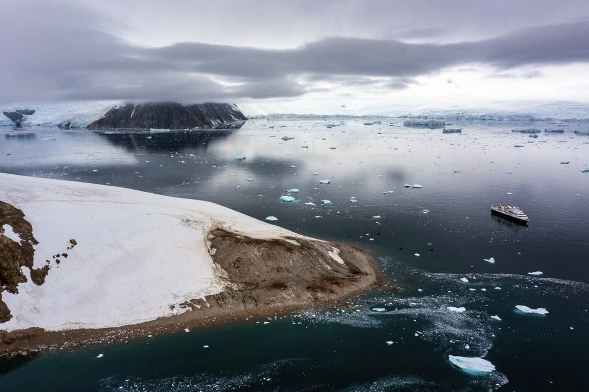{kind=link}
День 11-12
Остров Элефант назван в честь населяющих его морских слонов (род млекопитающих семейства тюленей), а также из-за того, что остров имеет форму головы слона. Суровые горы, сверкающие ледяные покровы и уникальная дикая природа добавляют загадочности этому удаленному месту. Несмотря на кажущийся неумолимым, но при этом завораживающе красивый пейзаж, легионы пингвинов в смокингах карабкаются по каменистой местности, в то время как гигантские морские слоны отдыхают на его берегах. Движемся на север в сторону Фолклендских островов.
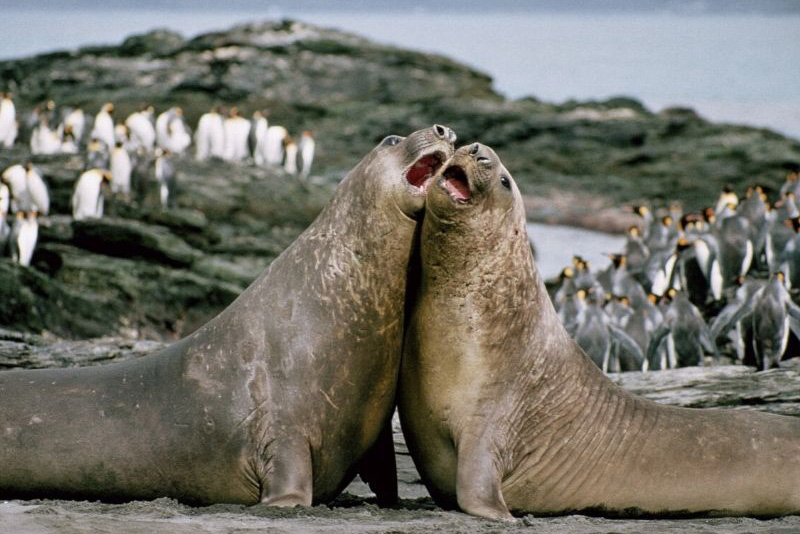{kind=link}
День 13
Фолклендские острова - это заморская территория Англии. Они являются перевалочным пунктом между Тихим и Атлантическим океанами. Главное, что Фолклендские острова - это уникальное место на планете. Он очень похож на Исландию своим климатом, неистовыми ветрами, но значительно отличается от нее пингвинами, облюбовавшими этот клочок суши. Их поголовье здесь превышает 770 000 птиц. Фолкленды - единственное место на земле, где живут в больших количествах Королевские пингвины и веселые Рокхоперы... Ну и конечно же, главные жители - это Магеллановы пингвины! Кстати, именно на Фолклендах, есть уникальный пляж с белым песочком и лазурной водой, который облюбовали пингвины.
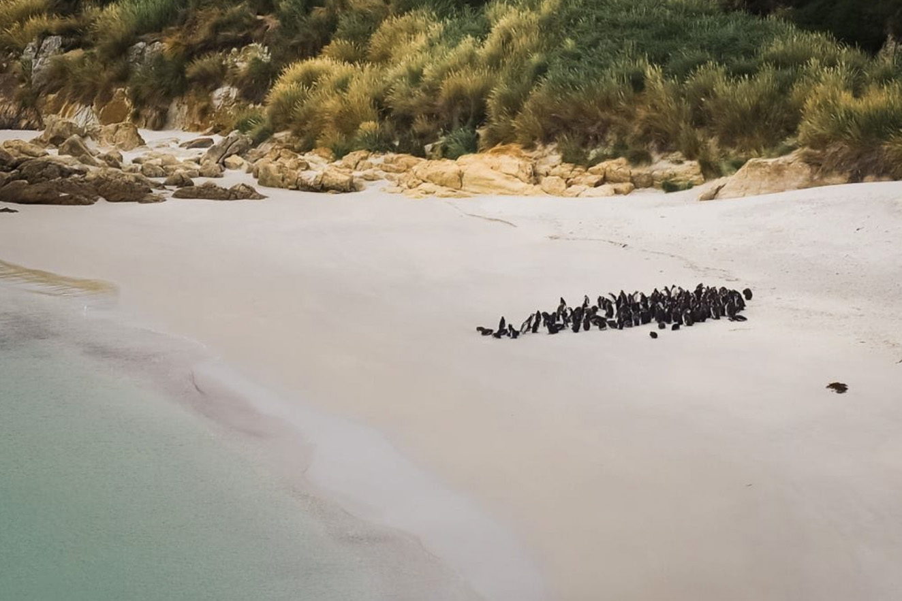{kind=link}
День 14-16
Дни 14-15 в море. С каждым днем все теплее. Движемся вдоль Огненной Земли и Патагонии на север. Корабль дает возможность выдохнуть после интенсивных впечатлений Антарктического этапа, и расслабиться на его многочисленных палубах и с его возможностями. На 16 день мы попадем в настоящий Сен-Тропе в Южной Америке. Пунта-дель-Эсте — самый престижный и популярный морской курорт в Уругвае. Будем отдыхать на пляжах вдоль 20-мильной насыщенной береговой линии, и станем свидетелями того, как большие волны разбиваются в Ла-Брава.
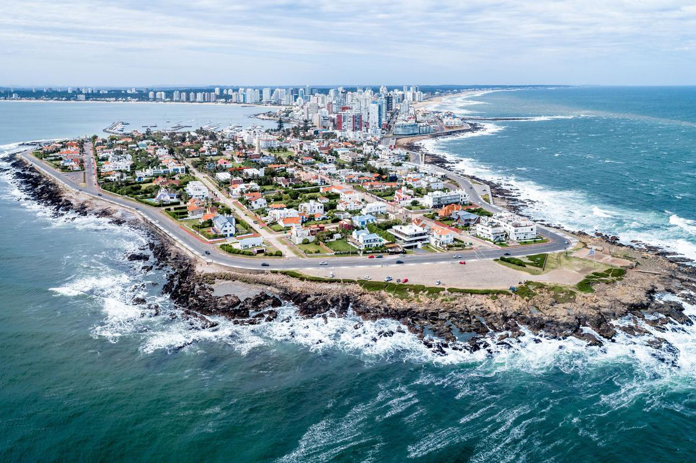{kind=link}
День 17-18
Около 6-и утра наше судно пришвартуется в уже хорошо нам знакомом Буэнос-Айресе. Сходим с борта и на трансфере отправляемся в отель. День релакса и отдыха в столице Аргентины. А вечером мы устроим ужин в лучших традициях ONE LIFE - будем делиться впечатлениями и приятными воспоминаниями. 18 день - вылет группы в Киев.
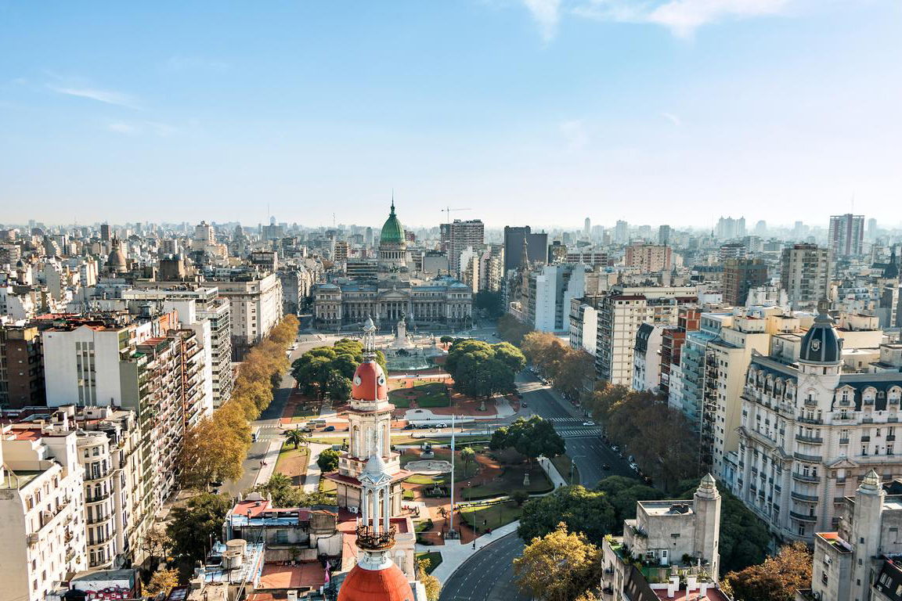{kind=link}
Цена: 3890.00 eur